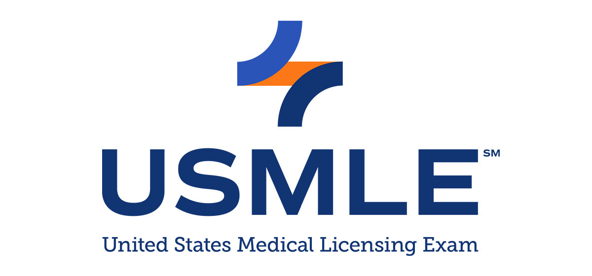
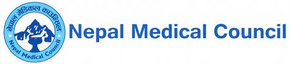
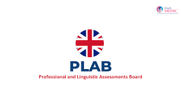
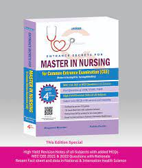
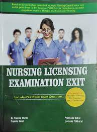
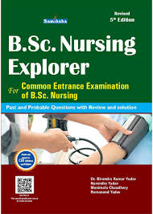

Follow the section below for the information of USMLE, NMLE, PLAB and PG Prep
The United States Medical Licensing Examination is a three-step examination program for medical licensure in the United States sponsored by the Federation of State Medical Boards and the National Board of Medical Examiners. Wikipedia
Full exam name: United States Medical Licensing Examination
Language: English
Fee: STEP 1: US$645.00; STEP 2: US$645.00; STEP 3: US$895.00
Year started: 1992; 32 years ago
Duration: STEP 1: 8 hours; STEP 2: 9 hours; STEP 3 (Day 1): 7 hours; STEP 3 (Day 2): 9 hours
Offered: Year round
Purpose: Medical licensure in the United States
The Nepal Medical Council Licensing Examination (NMCLE) is a test administered by the Nepal Medical Council (NMC) for medical graduates to obtain a license to practice medicine in Nepal.
Full exam name: NEPAL MEDICAL COUNCIL LICENSING EXAMINATION (NMCLE)
Language: Primary Nepali & secondary English
Fee: Specifically not exact data click here for details
Year started: 1992; 32 years ago
Duration: Time may vary according to your subject choices and NMC regulation.
Purpose: certifies medical graduates for practicing medicine in Nepal.
The Professional and Linguistic Assessments Board test, or the PLAB test, helps us to make sure doctors who qualified abroad have the right knowledge and skills to practise medicine in the UK. There are two parts to the PLAB test.
Full exam name: Professional and Linguistic Assessments Board
Language: English
Fee: Part 1 of the PLAB test(Bookings between 1 April 2023 - 31 March 2024)£255 £268(Bookings from 1 April 2024) Part 2 of the PLAB test (between)£934 (from)£981
Year started: first introduced in 1975; 49 years ago
Duration: PLAB 1 is a 3hr examination, while PLAB 2 is spread over 2 days, with each day typically lasting around 4 hours.
Offered: specific dates scheduled throughout the year.
Purpose: Practise Medical in the United States
PG (Postgraduate) education in medicine aims to create specialists who can provide excellent health care and help advance scientific progress through research and training

Full exam name: Preparation for Postgraduate(PG)
Language: English
Fee: May differ from your choice of subject/college some fee structure:(MD/MS Clinical 22,99,000, MD/MS Basic Science (Non-clinical) 10,48,135, MDS Clinical 22,99,000, MDS Non-Clinical 10,48,135)
Year started: University of Berlin (now Humboldt University) in Germany in 1810.
Follow the section below for the information of NCLEX(NGN), Mn Entrance, BN Entrance, BSC Entrance, NLEN and Lok Sewa
The NCLEX (National Council Licensure Examination) is a standardized test for nurses in the United States. Passing it is required for licensure as a registered nurse or licensed practical nurse.
Full exam name: National Council Licensure Examination
Language: English
Fee: Varies depending on the jurisdiction and the type of examination (RN or PN). Generally, the fee ranges from around $200 to $400.
Year started: Registered Nurses (RN) began in 1982, while the exam for Licensed Practical Nurses (LPN) started in 1990.
Duration: Varies depending on the number of questions a candidate receives and how long it takes them to answer them. However, candidates typically have a maximum of six hours to complete the exam.
Offered: Year round
Purpose: to ensure nurses are competent to provide safe and effective care in the United States.
The MN entrance examination is a standardized test administered to individuals seeking admission into Master of Nursing (MN) programs. It evaluates candidates' knowledge, skills, and preparedness for advanced studies in nursing. This comprehensive assessment helps universities and institutions determine the suitability of applicants for their MN programs.
Full exam name:Master of Nursing (MN) Entrance Examination.
Language: May vary depending on the institution and country where the examination is conducted.
Fee: Specifically not exact data click here for details
Duration: MN programs typically range from one to two years of full-time study.
Purpose: The purpose of a Master of Nursing (MN) program is to provide advanced education and training to nurses, enabling them to develop specialized knowledge and skills in areas such as clinical practice, leadership, research, education, and administration. MN programs aim to prepare nurses for advanced roles in healthcare, including clinical practice as nurse practitioners, nurse educators, nurse administrators, nurse researchers, and other specialized roles. Additionally, MN programs often focus on advancing evidence-based practice, promoting quality healthcare delivery, and addressing the evolving needs of patients and communities.
The BN entrance typically refers to the entrance examination for Bachelor of Nursing (BN) programs. It assesses applicants' readiness and qualifications for pursuing undergraduate studies in nursing.

Full exam name: Post Basic Bachelor of Nursing or Bachelor of Nursing.
Language: May vary depending on the institution and country where the examination is conducted.
Fee: Can vary depending on the institution or organization administering the exam.
Year started: Specifically not exact data click here for details
Duration: BN entrance exams may last for a few hours, during which candidates are required to complete sections covering subjects like science, mathematics, English, and nursing-related topics.
Offered: Not specified !
Purpose:
The purpose of the Bachelor of Nursing (BN) entrance examination is to assess the readiness and qualifications of candidates seeking admission to undergraduate nursing programs. It helps institutions evaluate applicants' knowledge, skills, and aptitude for pursuing a career in nursing. Additionally, the BN entrance examination aims to ensure that candidates possess the necessary academic foundation and competencies to succeed in their nursing studies and contribute effectively to the healthcare system.
The Nursing Licensing Exam, known as the NCLEX, is a standardized test administered in the United States to determine if candidates possess the necessary knowledge and skills to practice safely as entry-level nurses. It covers various nursing topics and must be passed to obtain licensure as a registered nurse (RN) or licensed practical/vocational nurse (LPN/LVN).
Full exam name: Nursing Licensing Examination
Language: English
Fee: May differ from your choice of subject/college
Year started: Not Specified !
Duration: Typically, the examination may last several hours, during which candidates are required to complete a set number of questions or tasks within a specified time frame. However, the exact duration of the NLEN would depend on factors such as the number of exam sections, question format, and time allotted for each section.
Purpose:
The purpose of the Nursing Licensing Examination (NLEN) is to assess the competence of nurses seeking licensure, ensuring they meet the standards necessary to provide safe and effective care to patients.
The BSc entrance typically refers to the entrance examination for Bachelor of Science (BSc) programs offered by various universities and colleges. It assesses applicants' readiness and qualifications for undergraduate studies in a wide range of disciplines within the sciences, including biology, chemistry, physics, mathematics, computer science, and more. 
Full exam name: Bachelor of Science Entrance Examination.
Language: English or any related country language prefered by institution.
Fee: Generally, the fees can range from a few hundred to a few thousand units of the respective currency.
Year started: Not specified.
Duration: Typically spans three to four years of full-time study, depending on the country and the specific requirements of the program.
Offered: Specific dates scheduled throughout the year.
Purpose: The purpose of Bachelor of Science (BSc) programs is to provide students with a comprehensive education in various scientific disciplines, such as biology, chemistry, physics, mathematics, computer science, and more. These programs aim to equip students with foundational knowledge, practical skills, critical thinking abilities, and scientific methods necessary for pursuing careers in fields like research, industry, academia, healthcare, technology, and beyond. Additionally, BSc programs foster intellectual curiosity, problem-solving skills, and a deeper understanding of the natural world, preparing students for lifelong learning and adaptation in an ever-evolving scientific landscape.
In the context of Nursing the Public Service Commission may oversee the recruitment and selection of nurses for employment in government healthcare facilities, such as hospitals, clinics, and public health agencies. This involves conducting examinations, interviews, and other assessment processes to identify qualified candidates who meet the standards required for nursing practice in the public sector. Additionally, the PSC may establish eligibility criteria, manage application processes, and ensure fair and transparent selection procedures to attract competent nursing professionals to serve in government healthcare settings. test.

Purpose: The Public Service Commission (PSC) plays a vital role in recruiting and selecting qualified individuals for public sector employment, including nurses in government healthcare facilities. Historically, the PSC has been responsible for conducting examinations and interviews to assess candidates' suitability for various positions within the public service.
Nursing professionals employed through the public service play a crucial role in delivering healthcare services to communities across the country. They work in government hospitals, clinics, and public health agencies, providing essential care to patients and contributing to public health initiatives. Nurses in the public service have a diverse scope of practice, including patient care, health promotion, disease prevention, and community health education.
The scope for nurses in public service is broad, encompassing various specialties such as medical-surgical nursing, obstetrics, pediatrics, mental health, and community health nursing. They work collaboratively with multidisciplinary healthcare teams to deliver comprehensive and quality care to individuals, families, and communities.
Overall, nurses in public service play a pivotal role in addressing the healthcare needs of the population, promoting health equity, and contributing to the overall well-being of society.